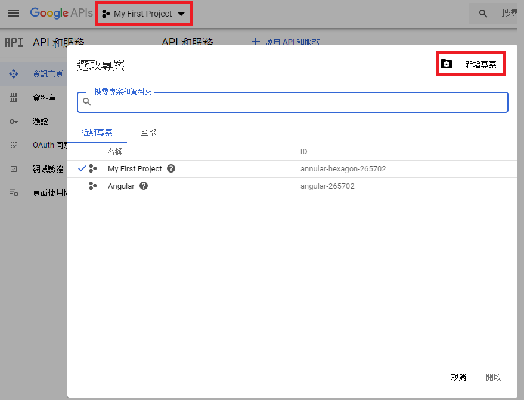
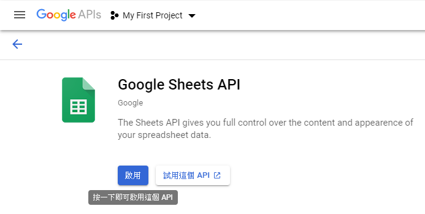
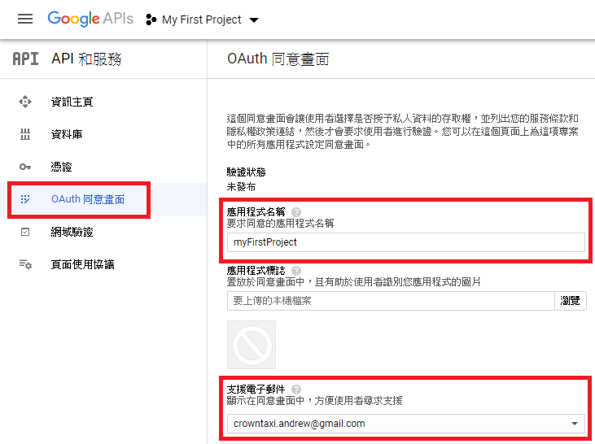
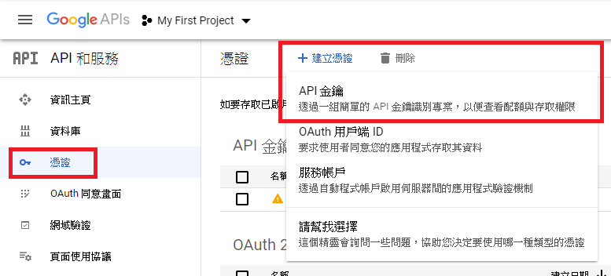
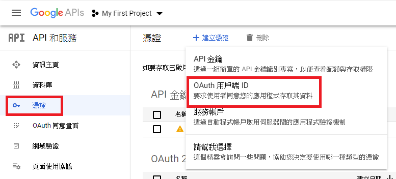
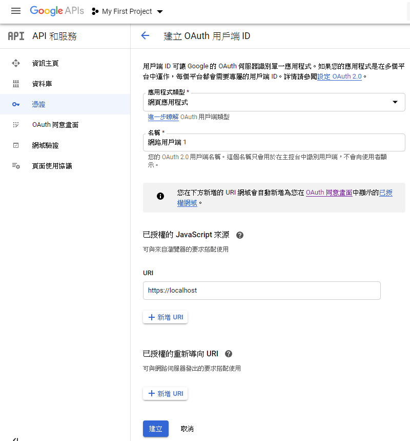
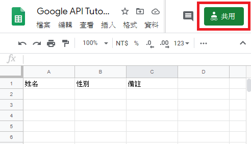
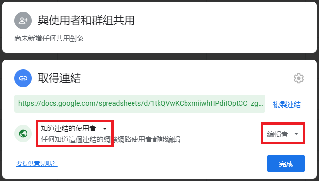

npm i --save @types/gapi @types/gapi.client @types/gapi.client.sheets
在 tsconfig.app.json 中，加入下列 code
"type": ["gapi",
"gapi.client", "gapi.client.sheets"]
點選左上角選取專案。跳出新視窗後點選右上角新增專案

點選 啟用API和服務
搜尋 Google Sheets API ，並點選啟用

點選左方 OAuth同意畫面， 使用者類型選擇外部， 應用程式名稱與 支援電子郵件為必填欄位

點選左方憑證， 再點選 建立憑證， 選擇 API金鑰

再次 建立憑證， 選擇 OAuth用戶端 ID

應用程式類型選擇網頁應用程式， 下方 URI 輸入需要用到此 API 的網址， ex. https://localhost

點 google 表單右上角 共用

點下方 取得連結，將"限制"更改為 知道連結的使用者。若要使用寫入功能，再將右邊"檢視者"更改為 編輯者

在 index.html 中，加入下列 code
<script src=
"https://apis.google.com/js/api.js"></script>
範例代碼
NgZone 官方文檔 參考資料1 參考資料2 參考資料3 NgZone 介紹1 NgZone 介紹2